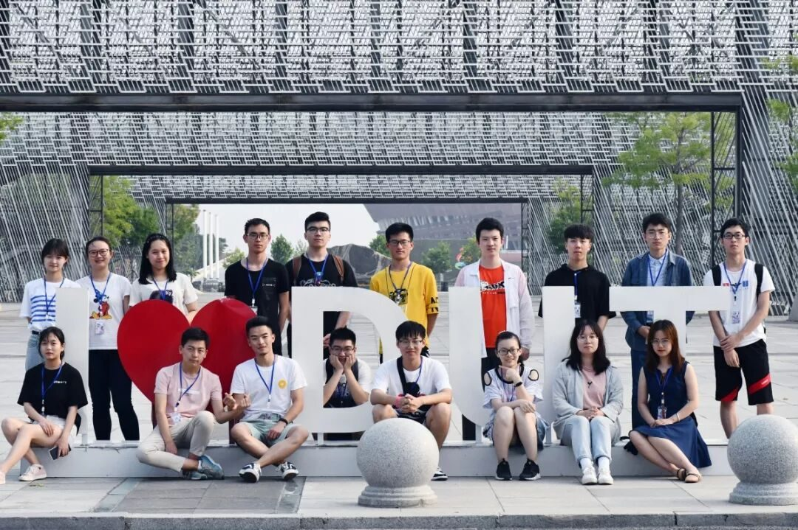
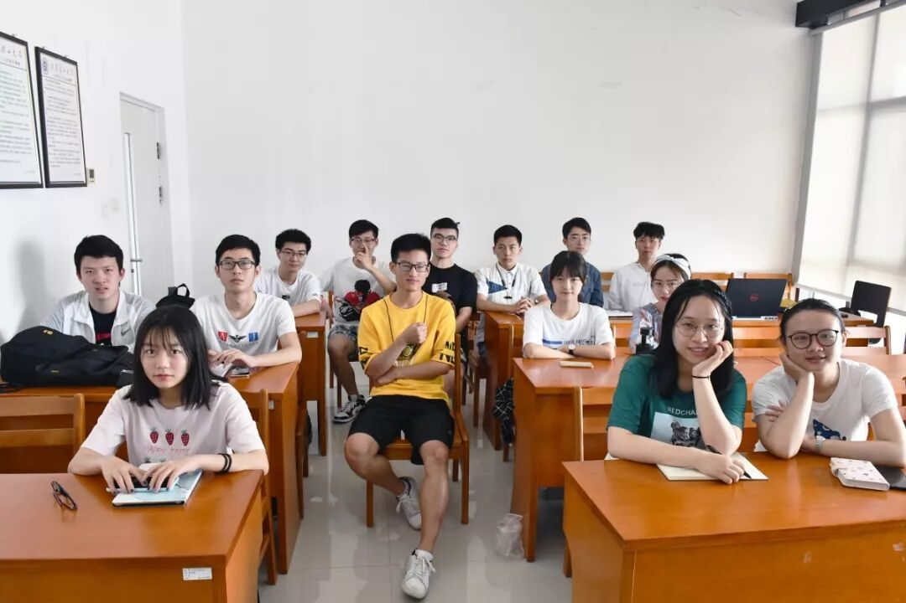
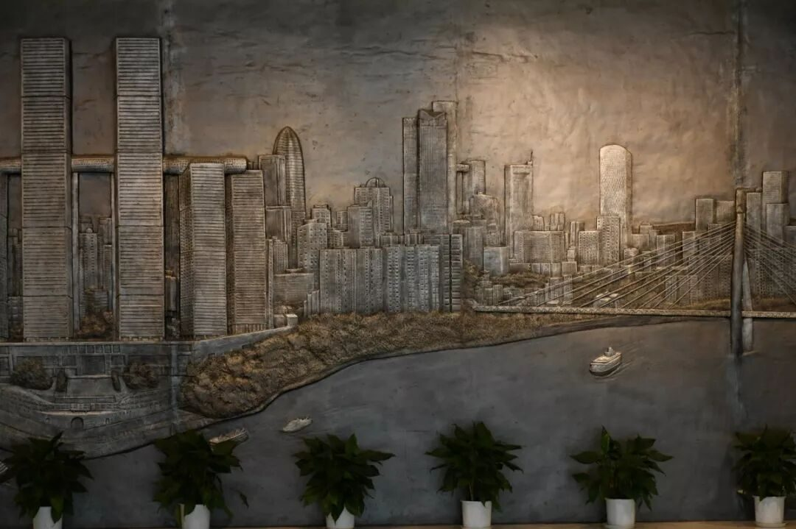
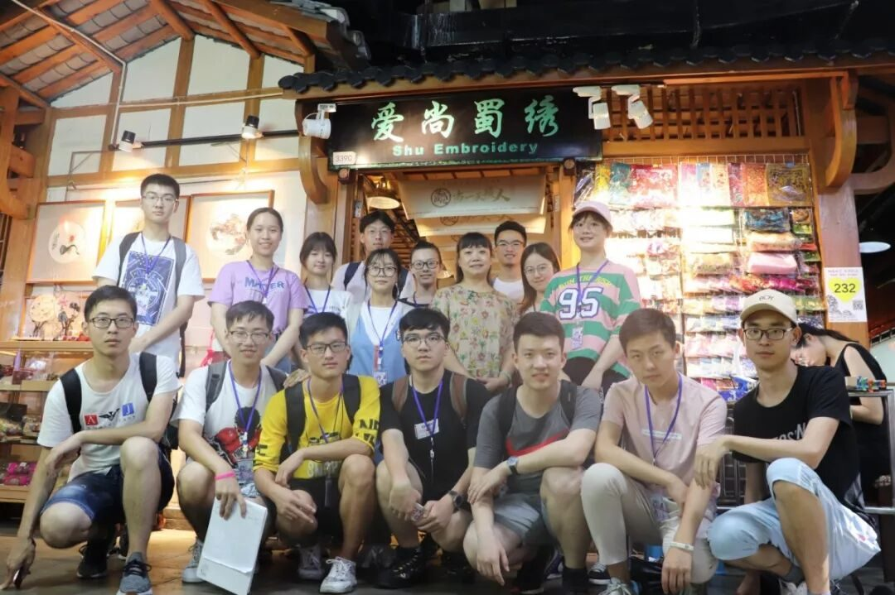

【渝传尺素•十】感谢相伴，不负遇见

行者
张锐
六月的相逢，七月的相伴。感谢命运齿轮，让我们的轨迹交汇，在重庆的炽热中相知。佛说：前世的五百次回眸，才换来今生的擦肩而过。那我们的相遇，岂不得擦肩“啊！我死了！”次。（皮一下，很开心！）说出来你可能不信，我是一个和别人始终保持距离的人。但当行程结束时回首发现，不知于何时，距离感背着我跑了。你们不相信也合情合理。


二十八日晚的匆匆一别，没在重庆和每个人好好道别，颇感遗憾。虽说我们必然会再相见，但是，恐怕不会再有人凌晨两点当面互道晚安，轻轨上相伴浅睡。我是一个在陌生人前高冷，熟识后话多但工作绝对认真的人。我一直觉得自己很菜，尤其是和一群超棒的行者们在一起的时候。记得在第一晚开会时，队长说要说自己一天行程感悟，我超慌！看到大家侃侃而谈，我就一个想法，一首《凉凉》送给自己。谢谢大家的陪伴和信任，为我大一学年画上了一个超完美的句号。

一直很认同余秋雨先生的一句话：路就是书。
余老先生贴地考察两万里，所写的文章真的让我很真切的感觉道文化的存在，对文化没落的惋惜以及对文化传承的珍重。所以我觉得，文化调研才能真正体会到一个地方专属于它的文化味道。
思者无域，行者无疆。正因此，我参加了行者的面试。收到短信的那一刻，意料之外又是意料之中，但总体欣喜来的多一点。自己的全力以赴，得到了回报。
在火车上的一夜，让我对有些事有了不同的见解。之前总是喜欢一个人旅行，因为怕被打扰，本身也喜欢清静。但这次不同，我第一次对乘车不觉得是一件枯燥乏味之事，感谢和我一个车厢的小伙伴门，让十九个小时的旅途变得生动有趣。在穿过好多“仙气缭绕”的大山后，在火车的鸣笛声中，抵达了重庆这座国际化都市。


很喜欢的一句话：改变带来的见识，远远大于见识带来的改变。渝州之旅，最先让我改变的，是对参观博物馆的态度。
以前总觉得参观博物馆很无聊，不如去看看风景，留几张自己喜欢的照片。后来发现，当你带着疑问去博物馆时，脑海里想的最多的是为什么，绝不是走马观花一般浏览。所谓存在即合理，我想作为一个地方发展的见证。博物馆的存在，主要是为了让后人去了解历史、传承文化、以史为鉴、着眼未来。
我们只是历史的翻阅者，而不是见证者，对历史我们无权评价。二十七日上午在图书馆与一位老先生的交谈感触颇多。先生作为重庆历史的见证者，对于码头文化和山城文化的执着，让我深切感受到依山傍而来的文化，对那一代人的影响。任何文化的兴衰都离不开一些政治因素，码头文化伴生的袍哥在战时跟随卢作孚先生完成的兵工厂水上迁移，保存了中国重要工业命脉，但随着时代的发展，因帮派林立引起的问题不断增多，袍哥也渐渐退出历史舞台。我们无权去评价任何一种文化，但我们深信，经过时间长河冲刷而留下来的文化，必然值得我们珍视。

着些许笔墨，书零星几句。写得完的是行程，说不尽的是情思。行者无疆是很棒的实践团队。我们都是超厉害的行者！
来源丨行者无疆实践团
文字丨张锐
排版丨陈嘉颖
审核丨邓子孚 段智然
视频丨陈辉
行者无疆实践团
QQ：2758025831

随行者一起认识世界
长按二维码